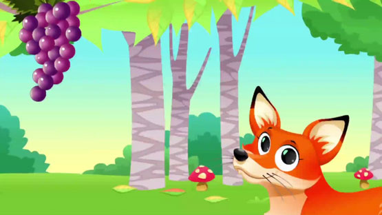

Truyện ngắn: CON CÁO & CHÙM
MỤC LỤC
CHƯƠNG 01: MỞ ĐẦU
CHƯƠNG 02: Giới thiệu
CHƯƠNG 03: Diễn biến
CHƯƠNG 04: Cao trào
CHƯƠNG 05: Kết thúc

Một ngày nọ, Cáo ta xuống triền núi và phát hiện ra phía trước có một vườn nho.
Dưới tán lá xanh, từng chùm nho căng tròn mọng nước, dưới ánh sáng mặt trời trông lại càng hấp dẫn. Những chùm nho này khiến người ta thèm thuồng.
Cáo thèm tới mức nước bọt cứ trào ra hai bên mép.
Cáo ta nhìn trước ngó sau thấy chẳng có ai, nho lại nhiều như thế này, cũng muốn chén ngay mấy chùm.
Cáo đứng thẳng người, vươn tay hái nho. Nhưng giàn nho thì cao quá, Cáo ta dù có vươn người đến đâu cũng không thể tới được.
Cáo nhanh trí nghĩ ra một cách, thử nhảy lên xem sao nhưng cố lắm cũng chỉ với tới lá nho mà thôi.
Cáo ta không đành lòng rời khỏi vườn nho khi chưa chén được quả nào, thế là nó lượn mấy vòng quanh vườn, cuối cùng cũng phát hiện ra một cây nho khá thấp.
Cáo ta lại nhảy lên, không tới được chùm nho, lại gắng sức nhảy lên lần nữa, vẫn không hái được quả nho nào.
Cáo ta lại lượn xung quanh giàn nho. Ha ha, cuối cùng thì cũng phát hiện ra một chùm nho còn thấp hơn chùm lúc nãy.
Thích chí quá, Cáo ta tự đắc:
– Không có việc gì có thể làm khó ta được, ha ha!
Nước dãi trong cổ họng cứ trào ra, lùi lại mấy bước lấy đà, Cáo nhảy lên, nhưng hỡi ôi, vẫn chẳng với tới được.
Cáo ta dù có làm thế nào cũng không thể hái được nho, thở đánh thượt một cái rồi nói:
– Làm sao mà mình lại cứ phải cố ăn mấy cái chùm nho này nhỉ? Vỏ thì xanh thế, chắc chắn là chưa chín rồi.
Không biết chừng còn vừa chua vừa chát, không nuốt được, có khi còn phải nhổ ra, đúng là chả ra làm sao cả.
Nói xong, Cáo rầu rĩ rời khỏi vườn nho.
Lời bàn:
Một số người khi không có được thứ gì đó liền nói thứ đó không ra gì cả.
Thực tế thì chỉ là vì khả năng của mình có giới hạn không thể có được nhưng đành lấy cớ, tự dối lòng mình để tự biện minh.